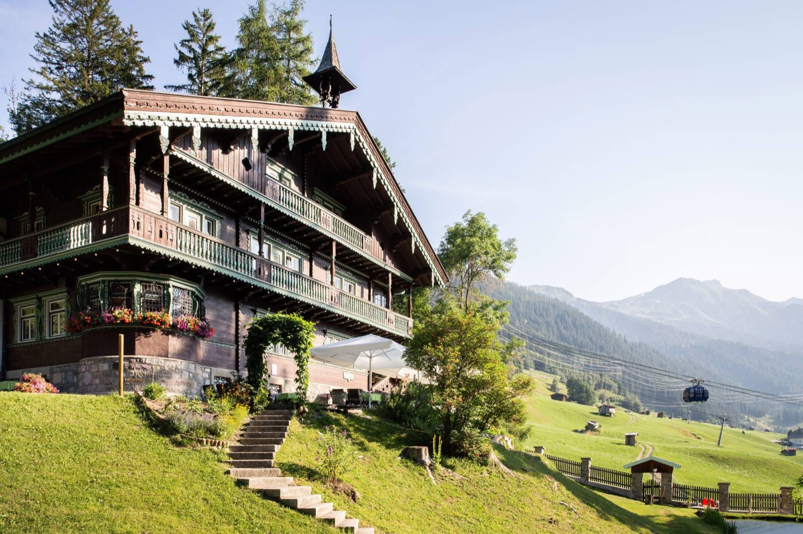
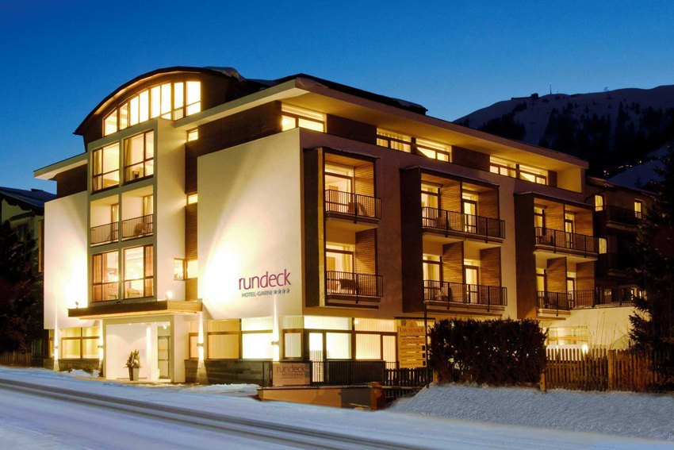
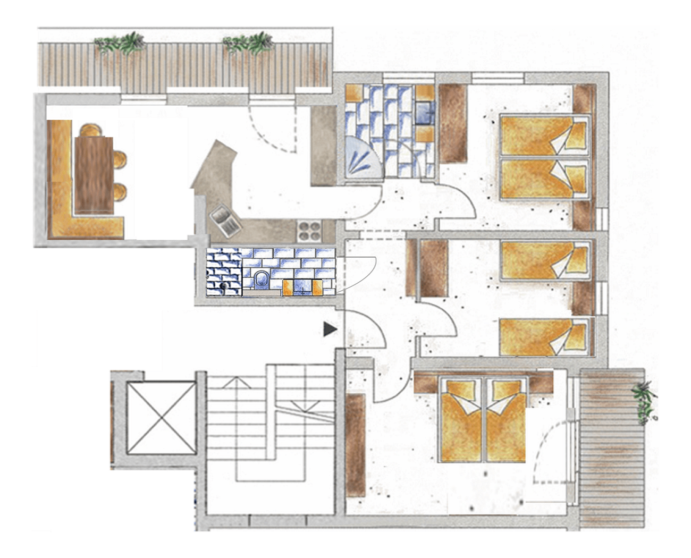
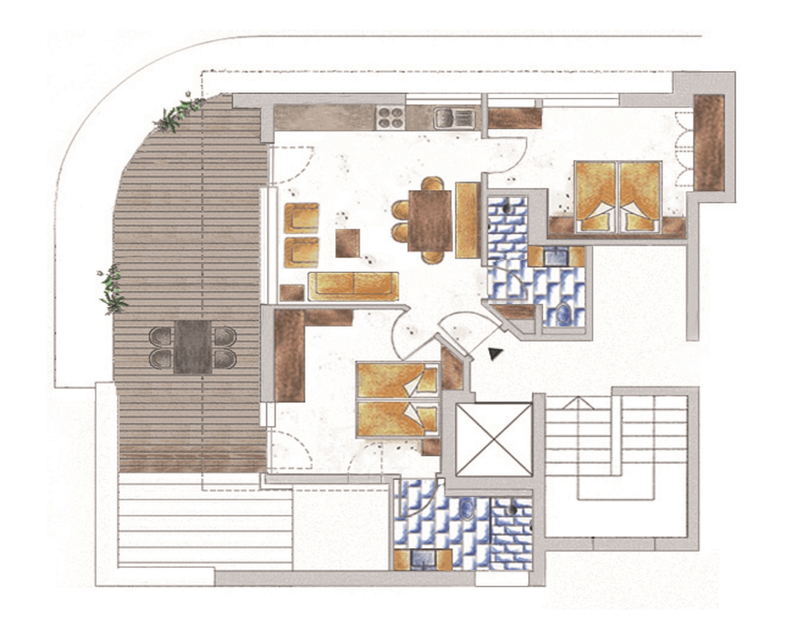
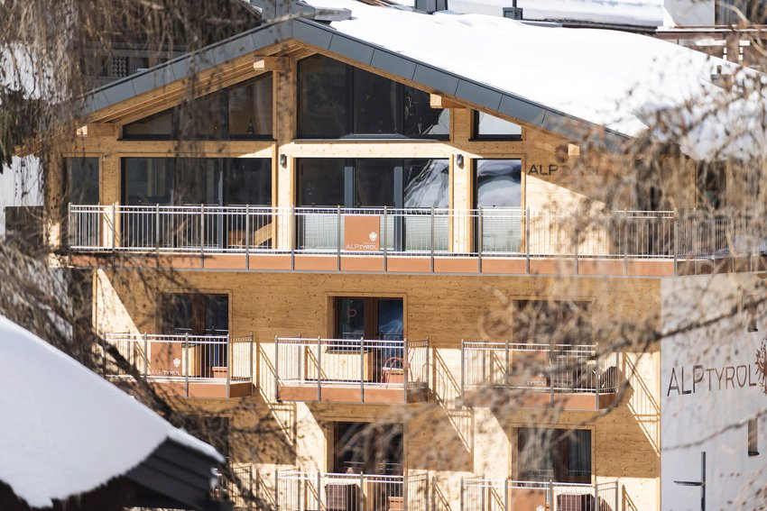

从苏黎世机场出发（ZRH）
到 St. Anton 约 200 公里
国际旅客可优先飞苏黎世机场。从苏黎世中央火车站直达圣安东约 2.5–3 小时，从苏黎世自驾约 2.5 小时。

到 St. Anton 约 200 公里
国际旅客可优先飞苏黎世机场。从苏黎世中央火车站直达圣安东约 2.5–3 小时，从苏黎世自驾约 2.5 小时。
到 St. Anton 约 100 公里
因斯布鲁克是离圣安东最近的机场，国际航班较少。可从机场前往因斯布鲁克中央火车站，再搭火车到圣安东。
到 St. Anton 约 250 公里
从德国出发，可以从慕尼黑机场自驾，也可以经慕尼黑市区搭火车。两种方式通常都比从苏黎世出发更久。
火车站、优选酒店和婚礼场地彼此步行都在 10 分钟以内。
双人入住 €140／晚，单人入住 €85／晚，公寓 €140–290／套／晚
步行到场地约 9 分钟 · Google 地图 4.9/5（170 条评价） ↗


Subject: Wedding accommodation request – YUEYAO – June 2027
Dear Hotel Garni Rundeck team, We're attending the wedding of Mr. Yue Yin and Mr. Siyao Peng on 19th June 2027 at the Museum Restaurant–Café. We'd like to book a stay using the booking code YUEYAO. Name for the booking: [guest's full name] Check-in: [19 June 2027] Check-out: [20 June 2027] Number of adults: [number] Number of children: [number] Preferred room type: [double room, suite or apartment] Please let us know how to confirm our booking. Kind regards, [Your name]
Betreff: Buchungsanfrage zur Hochzeit – YUEYAO – Juni 2027
Liebes Team von Hotel Garni Rundeck, wir sind am 19. Juni 2027 zur Hochzeit von Herrn Yue Yin und Herrn Siyao Peng im Museum Restaurant–Café eingeladen und würden gerne eine Unterkunft mit dem Buchungscode YUEYAO reservieren. Name für die Buchung: [vollständiger Name] Anreise: [19. Juni 2027] Abreise: [20. Juni 2027] Anzahl der Erwachsenen: [Anzahl] Anzahl der Kinder: [Anzahl] Zimmerwunsch: [Doppelzimmer, Suite oder Apartment] Bitte teilen Sie uns mit, wie wir die Buchung bestätigen können. Mit freundlichen Grüßen [Ihr Name]
以下是酒店邮件提供的 2027 年 6 月 18–20 日报价，按整套公寓每晚计价。早餐和住宿税另计。





双人房 €150／晚，三人套房 €225／晚
步行到场地约 9 分钟 · Google 地图 4.5/5（58 条评价） ↗


约 €70–100／人／晚，至少住两晚
步行到场地约 9 分钟 · Google 地图 4.9/5（62 条评价） ↗


Subject: Apartment booking request – June 2027
Dear ALPtyrol Appartements team, We're attending the wedding of Mr. Yue Yin and Mr. Siyao Peng on 19th June 2027 at the Museum Restaurant–Café. We'd like to book an apartment using the booking code YUEYAO. Name for the booking: [guest's full name] Check-in: [18 June 2027] Check-out: [20 June 2027] Number of adults: [number] Number of children: [number] Preferred apartment: [apartment name or preferred layout] Please let us know how to confirm our booking. Kind regards, [Your name]
Betreff: Buchungsanfrage zur Hochzeit – YUEYAO – Juni 2027
Liebes Team von ALPtyrol Appartements, wir sind am 19. Juni 2027 zur Hochzeit von Herrn Yue Yin und Herrn Siyao Peng im Museum Restaurant–Café eingeladen und würden gerne ein Apartment mit dem Buchungscode YUEYAO reservieren. Name für die Buchung: [vollständiger Name] Anreise: [18. Juni 2027] Abreise: [20. Juni 2027] Anzahl der Erwachsenen: [Anzahl] Anzahl der Kinder: [Anzahl] Apartmentwunsch: [Name oder gewünschte Aufteilung] Bitte teilen Sie uns mit, wie wir die Buchung bestätigen können. Mit freundlichen Grüßen [Ihr Name]
2027 年 6 月 18–20 日。以下是按官网分人数每晚价格计算的整套公寓两晚参考总价，另计住宿税。
这是当天的大致流程，和场地确认后时间可能会略有调整。
一路来到圣安东，终于见面啦！准备好一起玩了吗？
你们都是我们很重要的朋友，我们也想让你们成为朋友。
天气好的话，就请你在山风和草地间，陪我们一起见证这一刻。
倒一杯香槟，接着聊，也趁六月的好阳光拍几张照。
寻常日子尚且离不开美食，何况是我们的婚礼。
也许跳跳舞，也许唱唱歌，也许就天南地北地聊。
谁能拒绝夜里的一块蛋糕呢？给这一天留个甜甜的结尾。
我们一起走过深夜的圣安东，回房前互道晚安。
沿着草地走一走，让山间的小路带你去看看。
如果你会在 St. Anton 多待一会儿，可以自行安排这些活动。出发前请查看开放时间和当天情况。
越和尧初识时，在奥林匹克塔上拍下了这张合照。
现在回看这张照片，满城春色当然好看， 但我俩当时的皮肤和腰线， 也很值得多看两眼。
尧像个土匪一样，闯进了我的生活。 刚认识那几天的好多细节， 现在已经记不清了。 可那时的感觉，我还是会常常想起。
这是尧第一次去慕尼黑啤酒节。那天，越穿了巴伐利亚传统皮裤。
那条皮裤，我只见他穿过一次。 那天等他的时候， 我坐了好多啤酒节的过山车。
其实也没喝醉。 不过传统服装都穿上了， 总想让这个刚认识的男人看我一眼。
两人第一次一起旅行，去了国王湖看秋叶。回来后添了一张双人床。
国王湖的秋叶正好。 回来后，我们把纪念日定在了那个十月。 可每过一年， 我俩又都忘了是十月的哪一天。
出门旅行总让我有些害怕。 可和尧一起， 哪怕是第一次出游， 也觉得很自在。
尧回美国博士答辩前，和越一起去了巴黎。
那时还没找到博士毕业后的工作， 也不知道能不能马上回慕尼黑。 想着接下来可能要分开几个月， 临走前，就想带越去我最爱的巴黎。
巴黎那个下雨的夜晚， 我们为了躲雨一路奔跑， 直到钻进了屋檐下。 尧看着我的时候，眼睛亮晶晶的。
尧结束在美国的博士生活后，和越一起去了福建，走访厦门、泉州和漳州。
答辩才过三天，我就耐不住美国的寂寞。 扔掉了美国的家，打包了两个显示器， 飞回慕尼黑，接着回国暴饮暴食。 福建太好吃了！
第一次一起自驾游。 坐在副驾驶座上， 总忍不住感叹：这个男人也太帅了。
两人去川西毕棚沟跨年，第一次一起看雪，还订了温泉酒店。
本来想浪漫地跨个年。 结果两个人都高反，泡汤计划就这么泡汤了。
两个人都高反了， 可就在这片雪地上， 我们完成了在一起之后唯一一次的公主抱。
两人去了意大利科莫湖，也从这趟开始在欧洲自驾游小镇。
我们一度误以为意大利菜不过如此。 倒是从这趟起，爱上了欧洲的好山好水， 也爱上了开着车去各种漂亮的小镇。
差不多就是从这趟旅行开始， 尧发现我出门玩久了就会累。 后来，他也慢慢放缓了旅行的节奏。
尧带越去了加州，见了很多在美国的好朋友。
赴美前两个月，我偷偷约了旧金山的结婚登记。 本想给越个惊喜，但其实时机不成熟。 轻松的假期也被我排成了 Career Day， 回到酒店，我俩都累得半死。
来到了尧的精神故乡。 虽然是陌生的土地， 但有尧在身边，我就没那么紧张了。
两人在乔治城大学庆祝尧博士毕业，并偷偷拍下这张照片。
我把论文致谢的最后一段留给了越。 他是我博士旅程里最大的惊喜， 也是我决定回慕尼黑做博后的原因。 博士生涯刚结束，幸福日子早就开始了。
没想到尧偷偷把我的名字 写进了博士论文的致谢里。 能去他的毕业典礼， 我很庆幸没错过他人生中又一个重要时刻。
两人在纽约唱了卡拉 OK，还从法拉盛打包烧腊和肉夹馍带上回德国的航班。
在回德国的经济舱后排， 我俩吃了至今最豪华的一顿飞机餐。 越也发现，美国的粤菜真是顶呱呱。
在美国吃到了地道的中餐， 还唱了卡拉 OK。 一下子回到德国大农村，还真有点不习惯。
越带尧见了自己读硕士时认识的朋友。那也是两人第一次穿西装一起参加婚礼。
那天秀恩爱秀过了头， 合照看着像我俩在结婚。 猜猜我们婚礼还穿这两套吗？
现在再看这张照片， 反正这套西装，我是一点都穿不下了。
两人带美国来的朋友游瑞士，在龙疆湖拍了这张照片。
比慕尼黑更贵、更干净，也更「山」。 阿尔卑斯的春夏秋冬，哪一季都好看。
我们常去奥地利的阿尔卑斯山。 但瑞士的阿尔卑斯山， 有自己独特的美。
两人开始一起滑雪，后来去了 Zillertal、Ötztal 和 Inntal 等奥地利山谷。
仗着在加州滑过几次雪， 我就带越上了山顶的蓝道。 他有天赋，越滑越好， 现在我都追不上他了。
第一次滑雪， 就被尧和慕尼黑的朋友一起哄上了雪道。 滑出去五十米，就撞断了一块雪板。 没想到后来慢慢地，竟然也越滑越好了。
这是我俩一起在德国过的第一个冬天。逛了几个慕尼黑的圣诞市场，这次又去了奥格斯堡。
德国冬天那么长， 十二月总得喝点热红酒。 我一般点 Kinderpunsch（无酒精热果汁）。
那是尧第一次在德国过圣诞。 他大概没想到， 德国的圣诞节远没有美国的缤纷多彩。
两人去了西班牙山崖上的小城龙达，也尝了当地的野味。
没看斗牛，也用不着私奔。 可这座小城真适合谈恋爱。 野味也很好吃。
西班牙这一路很长， 尧开了很久很久的车。 可每到一个地方， 他还是精神十足地陪我四处探索。
两人在芭提雅的浅滩浮潜时拍下了这张合照。
怕水的我拉着在海边长大的越。 那一会儿，我们也住进了热带鱼儿的彩色世界。
那趟去泰国，我们还去了大象基地。 两个人都忘了给后脖颈擦防晒霜， 晒成了两个烤红薯。
两人在清迈逛小吃店，还上了半天泰菜课，学做炒河粉和打抛饭。
一出门就满头大汗， 也挡不住我们踩着拖鞋，一家家吃过去。 慕尼黑家里还藏着泰国干货， 欢迎来尝我的炒河粉、越的打抛饭。
从那趟旅行开始， 出国玩时，我们偶尔会上堂当地的厨艺课。 家里的调料也就越来越多了。
圣诞假期，两人在法国蔚蓝海岸的昂蒂布海边拍下这张照片，远处可见阿尔卑斯山。
昂蒂布低调又讲究。 海边是越的打水漂圣地。 远处那抹白，是阿尔卑斯的雪顶！
第一次开自己的车去长途自驾。 南法、勃艮第，一路都特别好吃。 还和尧第一次在欧洲吃到了 好吃又有鸡味的鸡。
两人第 N 次在奥地利索尔登滑雪。尧摔倒了，越也坐下来陪他在雪地里休息。
索尔登贵是贵，可冰川和普通雪道都有， 所以我们年年都来滑。 摔了，累了，那就坐下来看看风景， 反正有越陪我。
第一次从八字转成平行滑， 是在索尔登。 第一次滑黑道，也是在索尔登。
两人在摩德纳和托斯卡纳旅行，并在托斯卡纳学做意大利面。
这趟让我们对意大利菜改了观。 从此，去哪儿吃得开心，就想跟当地人学几道。 我最爱 Tagliatelle，越最爱 Lasagna。
在意大利参加朋友的婚礼时， 尧的舞姿惊艳了我。 后来一路吃下来才知道， 意大利真的有美食。科莫湖可把我骗惨了。
两人在托斯卡纳的田野间，看了一场晚上九点多的日落。
夏天的日出早得爬不起来。 可晚上九点多的日落，哪有不看的道理？ 田野望不到头，我们也就慢悠悠地看完了。
跟尧学会了随兴一点地旅行。 开着开着，看见了落日， 我就喊他停车。 我们坐在路边，看太阳落在葡萄田那头。
两人在 SkiWelt 滑了一天雪，傍晚坐缆车回到 Ellmau 山上，逛了圣诞市场。
逛过那么多圣诞市场，最静的是雪地里的 Ellmau。 灯光微微亮着，脚下的雪嘎吱响，还有我俩的笑声。 也喝到了至今最好喝的热红酒。
从 Ellmau 买回来的热红酒杯， 到现在还常拿来喝咖啡。
两人去了蒂罗尔的 Mayrhofen 滑雪，在宽阔的蓝道上练习。
Mayrhofen 的蓝道宽，正好练活儿。 那年才发现，光看风景可跟不上越。 于是我开始狠狠练。
Mayrhofen 的雪场是真的大。 我们滑了两天， 都没把所有雪道滑遍。
圣诞到新年，两人和好友去了斯特拉斯堡和欧洲公园，晚上在民宿打牌。
斯特拉斯堡的树桩蛋糕好吃得很， 热红酒嘛，我们还是投德国一票。 在欧洲公园又见识了天不怕地不怕的越。
去欧洲公园的前一晚失眠， 只睡了两个小时。 一天坐了七八个过山车， 下来竟然还精神焕发。
两人二月去了巴塞罗那，参观了圣家堂。
要是一座教堂没能打动越，那多半是它还不够壮观。 二月的圣家堂里，光也这么明媚。 就像我们每次去西班牙度假的心情。
我一直不爱逛教堂。 可圣家堂确实美得令人发指。 随便怎么拍，都忍不住想： 这光怎么能这么漂亮？
巴塞罗那之后，两人去了瓦伦西亚，逛了那里的城市公园。
如果说巴塞罗那是建筑之城， 那瓦伦西亚就是城市公园的殿堂。 租辆单车，或者就凭一双铁腿， 慢慢丈量这座温暖闲适的城市吧。
我在海边长大， 也没见过像瓦伦西亚这么长的沙滩。 一眼望过去，沙滩绵延好几公里。 真难想象夏天会有多少人来这儿度假。
两人坐水上出租车去威尼斯的玻璃岛穆拉诺，也短暂去了趟主岛。
我俩平时不太爱凑旅游胜地的热闹。 可要是住在玻璃岛，晨昏都能沿运河散步， 那就另当别论。主岛去快闪打个卡就好。
这趟我们选了玻璃岛住。 没想到，这反而成了整趟旅程里 最让我们觉得幸福的一件事。
在多洛米蒂的 Lago di Braies，两人划木船时由一位广州来的摄影师拍下这张照片。
谢谢广州来的摄影师！ Lago di Braies 的木船原始得很， 得有两个帅哥才驾驭得了。
到了多洛米蒂才发现， 原来阿尔卑斯山还有另一副面孔。 天气好得不像话， 人也美得不像话。
两人去了多洛米蒂的修斯高原。开车回慕尼黑时，我们聊到了结婚。
南蒂罗尔的山峰，还是比奥地利蒂罗尔的更显峭拔。 回程才发现，我俩早就准备好了， 就等对方先提结婚呢。
我们都不记得是怎么聊起结婚的。 但都记得回程车上的那个眼神。 一对上眼，就知道彼此都准备好了。
结婚前一天，我们在 Sønderborg 小镇走了走。
真开心有两位好友帮我们拍照和录像， 拍了老多好看的照片。 和亲友在海边走走、聊聊，就是最好的单身派对。
从开始准备到结婚，还不到一个月。 这场快闪式结婚，得归功于丹麦超简单的手续， 和尧无与伦比的执行力。
登记当天，两人穿着西装，在丹麦的 Aabenraa 小镇散步。
从这天起，我们要做彼此可以依靠的大人， 也要做对方心里的那个小朋友。
在丹麦的小镇上，一路走到市政厅， 收到了好几次路人的祝福。 心里甜甜的， 握着尧的手，也觉得很踏实。
两人在丹麦 Aabenraa 举行结婚登记仪式。
Yes, of course. Yes, I do. 异想天开的尧和脚踏实地的越， 给了彼此一个家。
我知道尧在这种场合完全流不出眼泪。 可听到他说「Yes, of course」的时候， 我还是掉了几颗小珍珠。
两人开始在奥地利蒂罗尔看婚礼场地，这张拍摄于 Fügen。
想带朋友们看看我们最爱的阿尔卑斯。 找个地方，让老朋友好好叙旧， 让新朋友慢慢认识。
希望能和你们分享我们的幸福， 也分享我们对阿尔卑斯的喜爱。 更希望新老朋友们 能借这个机会欢聚一堂。
2027 年 6 月 19 日（周六），想请你来奥地利圣安东，在蒂罗尔的青山与草地间，和我们一起过一个初夏的好日子，庆祝我们成为彼此的老公。
行程还没定也没关系，先跟我们说说，你有多大可能来、需不需要住宿。之后想再告诉我们新的打算，用同一个邮箱就好。
可将回执滑杆留在 50%（不确定）。
到场时间和仪式安排确认后，会更新到「婚礼流程」。